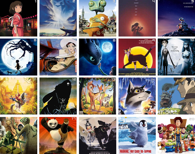

Gestation LengthsFor our study, we were trying to see if there was a correlation between the length of the gestation period and the size of the baby. We were only looking at the data provided by our dataset. This dataset contained certain limitations, such as the babies in it all being male. Some variability could also have been presented within the data due to the issue of estimating the exact gestation period’s start date. Previous review has been conducted with the idea of natural variability. This study notes it may be impossible to fully discover the relationship due to the impossibility of separating the gestational age, natural length of pregnancy, or both (see Pemberton et al., 2010). |

Caffeine Vs Memory ExperimentThis experiment was to see if someone was given extra caffeine did it affect how well they remember. The result of this experiment could have affect whether or not students will drink more caffeine while studying for exams or working on projects. The control groups consumed their normal amount of caffeine, whereas the treatment groups was given extra caffeine. The results showed no correlation between memory and caffeine. |

Animated Films ProjectOur group tried to figure out by using linear regression a formula for predicting how much money an animated film made. Through backwards regression, we found that the number of audience ratings, the number of critic ratings, the actual audience rating, the year of production, the estimated budget, and the art style of the film explained the most variability of the square root of the gross revenue for the film when fitted into a linear model. This model explains 61.57% of the variability in square root of the gross revenue. By making predictions on known films, we saw that the model makes fairly accurate predictions for the most part. We did not have enough evidence to suggest that Disney explained more of the variability in the model than the other variable which are included in our current model. This surprised us based on the boxplots at the beginning showing that Disney films average more gross revenue. We were somewhat surprised to find that people’s opinions of the film have a significant effect on how much the film grosses. Three of our six significant predictor had to do with ratings, showing that word of mouth and opinions of others have a large impact on whether people pay money to see films (therefore impacting the gross revenue).Through this descriptive regression analysis, we found that we can fairly accurately predict the gross revenue for films that gross more than 8 million USD, based on the 6 predictors we found to be significant. |
 Movie Picking Project |
 Game of Life ProjectThis was a project to create a change of events in a loop format in R that would show the living cells of an area. If there was over crowding, cells would die. If there was not enough close cells, cells would die. If there were only 2 close cells, the cells would live. This means that groups of three survived. |
 MN County PrisonsThis is a current project where I am finding infomation about MN county prisons so that I can predict how many prisoners each will have in the coming weeks and what conditions lead to the amount of people in prison in a county (i.e. education, provety, etc) |